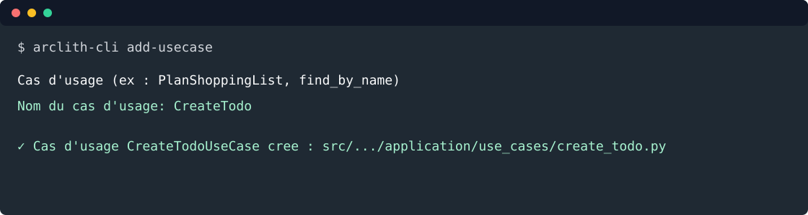

3. Créer le use case¶
Objectif: utiliser la CLI pour créer le fichier minimal, puis écrire le cas d'usage qui enregistre une todo via un port repository.

Depuis la racine du projet:
arclith-cli add-usecase
Répondre au prompt:
Cas d'usage (ex : PlanShoppingList, find_by_name)
Nom du cas d'usage: CreateTodo
La CLI crée:
src/todo_list_service/application/use_cases/create_todo.py
Remplacer le contenu par:
from __future__ import annotations
from datetime import date, datetime, timezone
from arclith.domain.ports.outbound.repository import Repository
from pydantic import BaseModel, Field
from todo_list_service.domain.models.todo import Todo, TodoStatus
class CreateTodoCommand(BaseModel):
title: str = Field(min_length=1, max_length=140)
description: str = Field(default="", max_length=4000)
due_date: date
status: TodoStatus = TodoStatus.TODO
completed_at: datetime | None = None
class CreateTodoUseCase:
def __init__(self, repository: Repository[Todo]) -> None:
self._repository = repository
async def execute(self, command: CreateTodoCommand) -> Todo:
completed_at = command.completed_at
if command.status == TodoStatus.DONE and completed_at is None:
completed_at = datetime.now(timezone.utc)
todo = Todo(
title=command.title,
description=command.description,
due_date=command.due_date,
status=command.status,
completed_at=completed_at,
)
return await self._repository.create(todo)
Le use case dépend seulement de Repository[Todo]. Il ne connaît ni FastAPI, ni FastMCP, ni
LangGraph, ni MongoDB.
Créer ensuite le container applicatif src/todo_list_service/infrastructure/containers/todo_container.py:
from __future__ import annotations
from arclith import Arclith
from arclith.domain.ports.outbound.repository import Repository
from todo_list_service.application.use_cases.create_todo import CreateTodoUseCase
from todo_list_service.domain.models.todo import Todo
_repository: Repository[Todo] | None = None
def build_todo_repository(app: Arclith) -> Repository[Todo]:
global _repository
if _repository is None:
_repository = app.repository(Todo)
return _repository
def build_create_todo_use_case(app: Arclith) -> CreateTodoUseCase:
return CreateTodoUseCase(build_todo_repository(app))
Le cache module-level est volontaire pour le mode memory: tous les appels API/MCP du même
processus partagent le même repository.
Tester¶
Créer tests/test_create_todo_usecase.py:
from datetime import date
import pytest
from arclith.adapters.outbound.memory.repository import InMemoryRepository
from todo_list_service.application.use_cases.create_todo import CreateTodoCommand, CreateTodoUseCase
from todo_list_service.domain.models.todo import Todo, TodoStatus
@pytest.mark.asyncio
async def test_create_todo_persists_entity() -> None:
repository = InMemoryRepository[Todo]()
use_case = CreateTodoUseCase(repository)
todo = await use_case.execute(
CreateTodoCommand(
title="Écrire le tutoriel",
description="Couvrir API, MCP et agent",
due_date=date(2026, 9, 1),
)
)
assert todo.status == TodoStatus.TODO
assert await repository.read(todo.uuid) == todo
@pytest.mark.asyncio
async def test_done_todo_gets_completion_date() -> None:
repository = InMemoryRepository[Todo]()
use_case = CreateTodoUseCase(repository)
todo = await use_case.execute(
CreateTodoCommand(
title="Publier",
due_date=date(2026, 9, 1),
status=TodoStatus.DONE,
)
)
assert todo.completed_at is not None
Lancer:
uv run python -m pytest tests/test_todo_entity.py tests/test_create_todo_usecase.py
Voie rapide¶
arclith-cli add-usecase CreateTodo
Étape suivante: exposer une API.